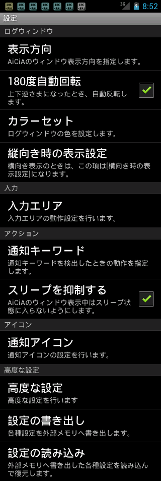
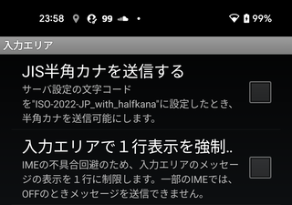

[環境設定]メニュー
[環境設定]メニュー
メインメニューから[その他]-[環境設定]を選ぶと、AiCiAの環境設定を行うことができます。
- ログウィンドウ
- 入力
-
- 入力エリア
-
入力エリアの設定を行います。
- アクション
-
- 通知キーワード
-
発言内に通知キーワードを検知したときの動作設定を行います。
- スリープを抑制する
-
AiCiAのウィンドウ表示中はスリープ状態に入らないようにします。
- アイコン
-
- 通知アイコン
-
画面上部のステータスエリアに表示される通知アイコンの動作設定を行います。
- 高度な設定
-
- 高度な設定
-
通常の使用では変更する必要がない設定、豊富な知識が必要な設定などを行います。
- 設定の書き出し
-
AiCiAの全設定を外部メモリ（通常はSDカード）に書き出します。設定のバックアップに使用します。書き出した設定ファイルには、IRCサーバへの接続パスワードが含まれています。取り扱いにご注意ください。
- 設定の読み込み
-
[設定の書き込み]で書き出したファイルを読み込み、設定を復元します。設定ファイルが正常に読み込まれると、AiCiAは一旦終了します。次回の起動時に、AiCiAは復元された設定で起動します。
表示方向
[表示方向]ダイアログ
AiCiAの画面の向きを指定します。
「設定：表示方向」メニューを選ぶと、表示されます。
| 常に画面の 向きに合わせる |
本体を回転させたとき、常にその方向に合わせて表示を回転させます。 |
|---|---|
| スタート時の 画面の向きで固定 |
AiCiAを起動したときの画面の向きで初期設定を行ったあと、本体を回転させても表示方向を変更しません。 |
| 縦向き表示で固定 | 本体の向きに関係なく、常に縦向きで表示します。 |
| 横向き表示で固定 | 本体の向きに関係なく、常に横向きで表示します。 |
表示設定
[表示設定]メニュー
画面表示内容の設定を行います。
「設定：縦向き／横向き時の表示設定」メニューを選ぶと、表示されます。
この設定は、「縦向き／横向き」のそれぞれで個別に保存することができます。
- 文字と行間
- 文字フォントとログ表示行間の設定を行います。
- レイアウト
-
メインログ／サブログのウィンドウの並び方を指定します。
上（メインログ）、下（サブログ）
下（メインログ）、上（サブログ）縦長画面での利用に適した配置となります。 左（メインログ）、右（サブログ）
右（メインログ）、左（サブログ）横長画面での利用にに適した配置となります。 - サブログのサイズ
-
サブログウィンドウの大きさを指定します。
最小 サブログウィンドウは表示されません。 小さい サブログウィンドウは画面の1/3となります。 普通 サブログウィンドウは画面の1/2となります。 大きい サブログウィンドウは画面の2/3となります。
-
[コマンドボタン]メニュー画面下部のボタンのサイズと表示/非表示を指定します。- ボタンサイズを指定します。
- ボタンの幅を大きくします。
- チャンネル移動ボタンを表示します。
- チャンネル一覧ボタンを表示します。
- ユーティリティボタンを表示します。
- アプリボタンを表示します。
- ウェブサイトボタンを表示します。
- ステータスバー表示
-
ステータスバーの表示/非表示を指定します。ステータスバーを消すとフルスクリーンを使用できるようになるため、ログウィンドウを広くすることができます。ログウィンドウを縦分割にした状態でフルスクリーンにした状態でソフトキーボードを表示すると、上側のログウィンドウが画面外へせり上がってしまい、操作できなくなることがあります。
- タイトルバー表示
-
タイトルバーの表示/非表示を指定します。タイトルバーを消すと、ログウィンドウを広くすることができます。この設定の変更は、AiCiAの再起動後に有効となります。また、OS3.0以降ではメニューボタンの表示にタイトルバーが必要となるため、スイッチをOFFにしてもタイトルバーを消去することはできません。
文字と行間

[文字と行間]メニュー
文字と行間の設定を行います。
「設定：表示設定：文字と行間」メニューを選ぶと、表示されます。
- 入力エリア
-
入力エリアの文字を指定します。
- メインログ
-
メインログウィンドウの文字と行間を指定します。
- サブログ
-
サブログウィンドウの文字と行間を指定します。
それぞれについて、以下の項目を設定することができます。
- フェイス
-
文字の字形を指定します。[デフォルト]・[明朝（セリフ）]・[ゴシック（サンセリフ）]・[等幅]は、端末に内蔵されているフォントのいずれかに割り当てられます。指定したフェイスが実際にどんな字形であるかは、端末により異なります。全てが同じフェイスに割り当てられているケースもあり、この場合はどれを選んでも字形は変化しません。[外部フォントファイル]を選ぶと、SDカードなどに入れたTrueTypeフォントファイルを読み込んで、その字形で表示することができます。外部フォントファイルのパス名は、[高度な設定]で設定します。
- サイズ
-
文字の大きさを指定します。
- 行間
-
ログの行間を指定します。
入力エリア

[入力エリア]メニュー
[入力エリア]メニュー
入力エリアの動作設定を行います。
「設定：入力エリア」メニューを選ぶと、表示されます。
- JIS半角カナを送信する
-
サーバ設定の文字コードを"ISO-2022-JP_with_halfkana"に設定したとき、半角カナを送信可能にします。このスイッチがOFFのとき、またサーバ設定の文字コードが"ISO-2022-JP"のときは、半角カナは全角カナに置換してから送信されます。JIS半角カナの送信は、一般的には推奨されません。他ユーザーとの合意のもとで行うことをおすすめします。"ISO-2022-JP_with_halfkana"・"ISO-2022-JP"のどちらでもないときは、半角カナ文字に対して特別な処理を行いません。
- 入力エリアで１行表示を強制する
-
IMEの不具合回避のため、入力エリアの送信メッセージの表示を１行に制限します。一部のIMEでは、OFFのとき入力メッセージをEnterキーで送信できない問題が発生しますが、ONにすることでこれを回避することができます。表示を１行に制限しているときは、入力中のメッセージが収まりきらなくなった場合、横スクロールで一部だけが表示されます。制限していないときは、全体が複数行に折り返して表示されます。
通知キーワード
[通知キーワード]メニュー
メッセージ内に通知キーワードを検知したときの動作設定を行います。
「設定：通知キーワード」メニューを選ぶと、表示されます。
- 音声
-
通知キーワードを検出したとき、通知音を鳴らします。音声ファイルを"/sdcard/AiCiA/ring.ogg"というファイル名で配置すると、そのファイルを通知音として鳴らすことができます。通知音のサンプルを、以下からダウンロードすることができます。
- 通知音量
-
通知音の大きさを指定します。
- 振動
-
通知キーワードを検出したとき、バイブレータを起動します。
- 強調表示
-
通知キーワードを検出したとき、その行を強調表示します。
- OSの通知システムで表示
-
通知が行われるとき、OSの通知システムにその行を表示します。通知をタップすることで、AiCiAで通知チャンネルを開くことができます。

通知の例 - 通知をシステムチャンネルに転送する
-
通知キーワードを検出したとき、そのメッセージをシステムチャンネルでも表示するようにします。システムチャンネルのログで通知の一覧を確認することができるようになります。
-
[Ch]ボタンを長押し（ロングタップ）したとき、「通知チャンネルの一覧」メニューを表示します。OFFのときは、[Ch]ボタンを長押ししたとき「更新チャンネルの一覧」メニューを表示します。

マーク付チャンネル「通知チャンネル」や「更新チャンネル」は、チャンネル名の先頭に、以下のマークが表示されます。[@] 通知チャンネル 「通知キーワードが含まれた発言があった」ことを示します。 [*] 更新チャンネル 「新しい発言があった」ことを示します。
通知アイコン
[通知アイコン]メニュー
画面上部のステータスエリアに表示される通知アイコンの動作設定を行います。
「設定：通知アイコン」メニューを選ぶと、表示されます。
- "Low Memory"通知を表示
-
メモリ不足によるIRC通信の強制終了の可能性があるとき、アイコンを表示します。
- サーバ通知を表示する
-
IRCサーバに対して接続や切断が発生したとき、アイコンを表示します。
- メインアイコンを消さない
-
ユーザーによる「通知の削除」を行ったとき、メインアイコンは消されずに残るようにします。
高度な設定
[高度な設定]メニュー
通常の使用では変更する必要がない、高度な設定を行います。
「設定：高度な設定」メニューを選ぶと、表示されます。
- ログサイズ
-
AiCiAが保持するログのサイズを設定します。
- 接続
-
IRCサーバへの接続に関する設定を行います。
- TweetIRCGatewayモード
-
TweetIRCGatewayサーバに接続するときの設定を行います。
- 外部フォントファイル
-
ログ表示に使用するTrueTypeフォントファイルのパス名を指定します。この項目をタップすると、SDカード上にあるTrueTypeフォントファイル（*.ttf）を選ぶダイアログが表示されます。ここで指定したフォントで表示するには、「文字と行間：フェイス」で[外部フォントファイル]を選びます。
- Verboseモード
-
内部動作をログに出力します。0～5のレベルを指定することができ、大きいほど詳細な動作のログが表示されるようになります。
0 初期値です。1 - 表示抑制されている多くのニューメリックリプライ
2 - Keepaliveパケットの送信
- IRCサーバとのPing/Pong
3 - AiCiAのUI部と常駐部の通信内容
4 - AiCiAのUI部動作ログ
5 - AiCiAのフリック動作などの座標情報ログ
ログサイズ
[ログサイズ]メニュー
AiCiAが保持するログのサイズを設定します。
「設定：高度な設定：ログサイズ」メニューを選ぶと、表示されます。
- メインログ行数
-
IRC接続サービスが保持するメインログの行数を設定します。保持するログが指定した行数の２倍に達すると、古いログを廃棄します。
- サブログ行数
-
IRC接続サービスが保持するサブログの行数を設定します。保持するログが指定した行数の２倍に達すると、古いログを廃棄します。
- メインログのウィンドウバッファ
-
メインログウィンドウに表示できる文字数を指定します。保持するログが指定した文字数の２倍に達すると、古いログを廃棄します。
- サブログのウィンドウバッファ
-
サブログウィンドウに表示できる文字数を指定します。保持するログが指定した文字数の２倍に達すると、古いログを廃棄します。
接続
[接続]メニュー
IRCサーバへの接続に関する設定を行います。
「設定：高度な設定：接続」メニューを選ぶと、表示されます。
- KeepAlive送出間隔
-
IRCサーバ接続を維持するためのパケットの送信間隔を指定します。0を指定すると、KeepAliveパケットの送出を行いません。
- 自動再接続間隔
-
IRCサーバとの接続が切れたときの再接続までの待ち時間を指定します。0を指定すると、自動再接続を行いません。
TweetIRCGatewayモード
[TweetIRCGatewayモード]メニュー
TweetIRCGatewayサーバに接続するときの設定を行います。
「設定：高度な設定：TweetIRCGatewayモード」メニューを選ぶと、表示されます。
- 非公式RTコマンドの名前
-
TIGモードで非公式RTを行うときのコマンド名を指定します。
- Twitterモバイルサイトを開く
-
TwitterサイトへのURLリンクを開くとき、 http://mobile.twitter.com/ へアクセスします。このスイッチがOFFのときは、 http://twitter.com/ へアクセスします。